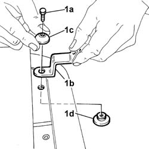

7035D14 l/h or r/h side opening window joints - r+r with window removed
- Path
- Procedures > 70 FITTINGS > 7035 BODYSHELL WINDOWS > 7035D passenger compartment side opening windows > 7035D14 l/h or r/h side opening window joints - r+r with window removed
- Kind
- repair procedure (removal / refitting; the operation number is the code)
- Applies to
- all engines; all production periods
- Interactive page
- https://sloeber94.github.io/elrnDB-fDbl/en/#/2585128
Applies to: all engines; all production periods; only with equipment: Doblò trim level
 Removing
Removing
 Refitting
Refitting1. Undo the bolt (1a) and remove the joint (1b), recovering the upper (1c) and lower (1d) shims.
Carry out the same operation for the remaining joint.

Applies to: all engines; all production periods; only with equipment: Doblò trim level
Refitting
RemovingPosition the joint and secure it using the bolt, fitting the upper and lower shims.